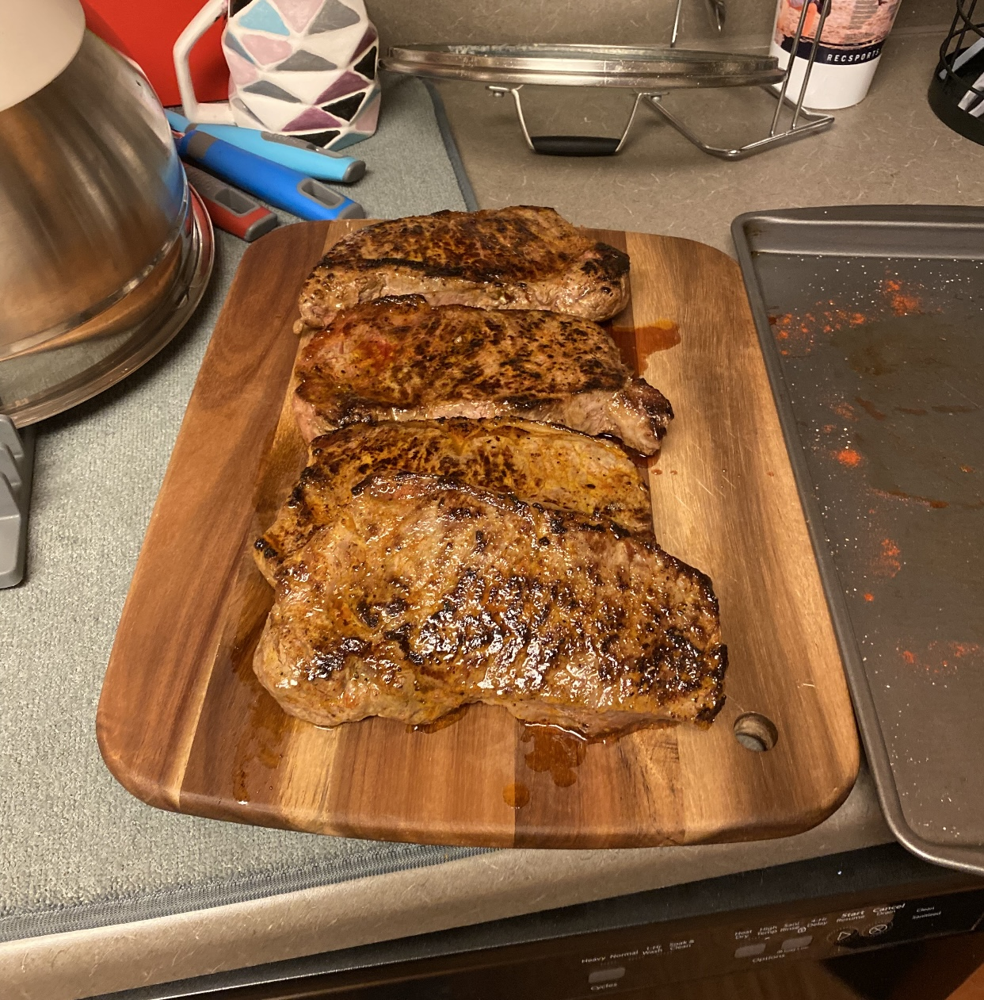
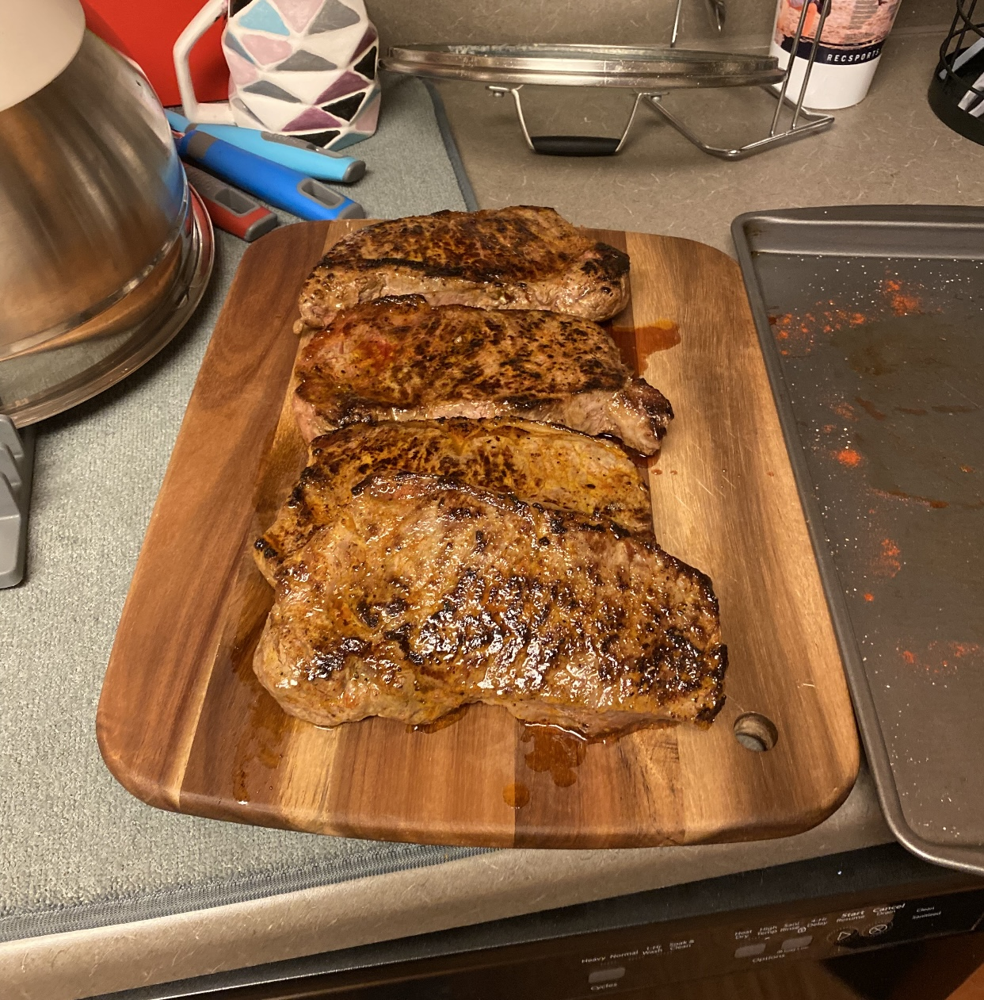

What do two college students know about food? Why are two stem focused individuals taking time to share about their favorite recipes and restaurants?
Long story short...WE LOVE FOOD!
Even though students, professors, and adults alike are always busy or focused with something, food is something that is always needed! Whether you are rushing and need a quick meal on the go, or have a little longer to make an affordable meal, we are committed to spreading what we've learned since coming to Berkeley. College students are the cleverest of the bunch and we will quickly find the best places/things to eat on a college student level budget. Through our various blogs, we hope to share our best tips and recomendations to best help the Berkeley community.


 
